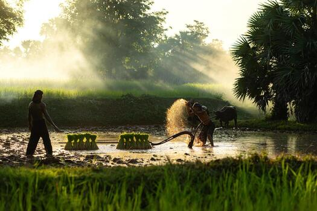
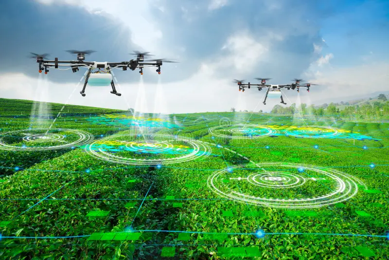
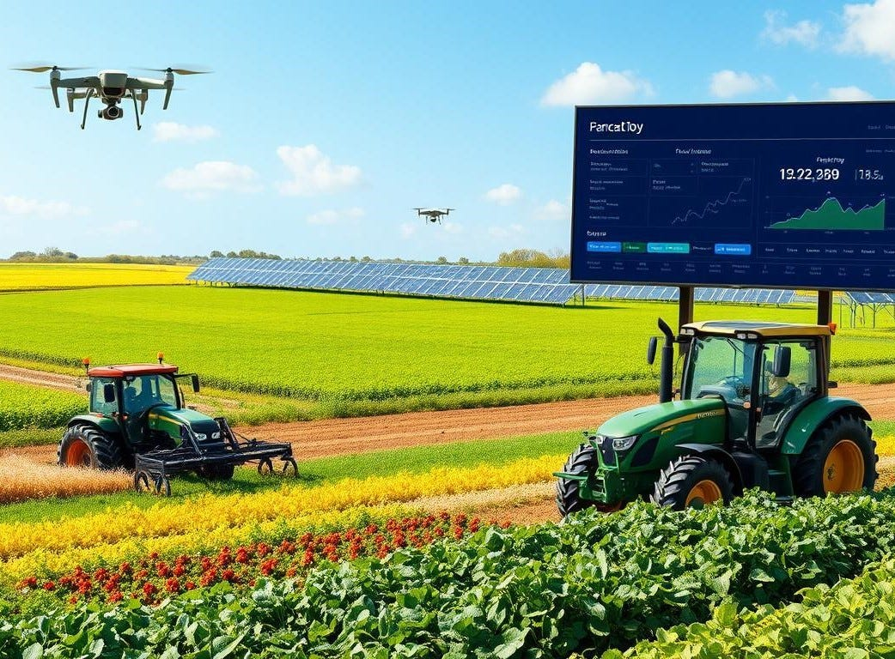
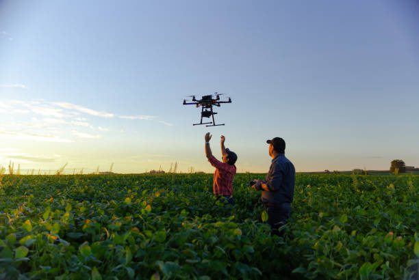
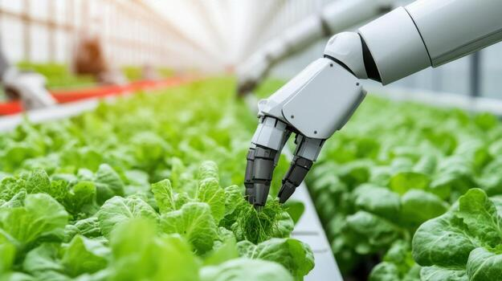

Smart Agriculture Solutions
Our agriculture and rural solutions are designed to
modernize farming operations through advanced digital
technologies, automation, and smart management systems.
We help farmers and agricultural organizations streamline
crop monitoring, irrigation management, resource planning,
and operational workflows to improve productivity and
reduce manual effort.
We focus on enabling data-driven agriculture through real-time
analytics, IoT integration, and mobile-based platforms that
provide valuable insights into farming activities. Our
solutions help monitor soil conditions, weather patterns,
crop health, and equipment performance, allowing farmers
to make informed decisions and optimize agricultural output.
With a strong emphasis on sustainability, accessibility, and
rural development, we develop scalable solutions tailored
to the evolving needs of modern agriculture. Our technology
-driven approach helps improve rural connectivity, enhance
farming efficiency, and support long-term agricultural growth
while creating smarter and more sustainable farming ecosystems.
Smart Farming Management Systems
We develop advanced smart farming management systems that help farmers and agricultural businesses monitor, manage, and optimize farming operations through digital technologies. Our solutions integrate crop planning, irrigation management, soil monitoring, weather tracking, and resource allocation into a centralized platform. By automating farming processes and providing real-time insights, we help improve productivity, reduce operational costs, and support sustainable agricultural practices.
Agriculture Mobile App Development
We create user-friendly agriculture mobile applications that enable farmers to access important farming information and services directly from their smartphones. Our apps provide real-time weather updates, crop monitoring, market prices, irrigation alerts, and farming guidance to support better decision-making. With intuitive interfaces and offline accessibility, we help rural communities stay connected and improve agricultural efficiency even in remote areas.
Rural E-Commerce & Marketplace Platforms
We develop digital marketplace platforms that connect farmers, suppliers, and buyers through seamless online trading systems. Our solutions enable users to buy and sell agricultural products, farming equipment, and raw materials efficiently through secure and accessible platforms. By improving market access and simplifying transactions, we help rural businesses expand their reach, increase profitability, and strengthen agricultural supply chains.
Agricultural Data Analytics & Automation
Our agricultural analytics and automation solutions transform farming data into actionable insights that improve productivity and operational efficiency. By analyzing crop performance, soil conditions, weather patterns, and equipment usage, we help farmers make data-driven decisions and optimize farming strategies. Through automation and intelligent monitoring systems, our solutions reduce manual effort, improve resource utilization, and support smarter agricultural management.






Sustainable Farming Systems
Our technology-driven solutions support smarter farming operations, better crop management, and long-term agricultural sustainability.
Easy Access Through Mobile Platforms
Our mobile-friendly agriculture solutions enable farmers to access important farming information, market updates, and operational tools directly from their smartphones. With simple interfaces and real-time notifications, users can manage farming activities anytime and anywhere.
Real-Time Farm Monitoring
We provide advanced farm monitoring solutions that allow farmers and agricultural businesses to track crop conditions, soil health, irrigation levels, and weather updates in real time. By using smart sensors, analytics, and digital dashboards, users can make faster and more informed farming decisions.
Automated Farming Operations
We develop intelligent automation systems that simplify repetitive farming tasks such as irrigation control, crop monitoring, equipment tracking, and resource management. By reducing manual effort and improving operational accuracy, our solutions help farmers save time, lower costs, and increase efficiency while maintaining consistent farming performance.
Data-Driven Agricultural Insights
Our analytics-driven solutions help farmers understand crop performance, weather patterns, soil conditions, and resource utilization through detailed reports and real-time insights. By transforming agricultural data into actionable information, we enable smarter planning, improved productivity, and more sustainable farming practices that support long-term growth.